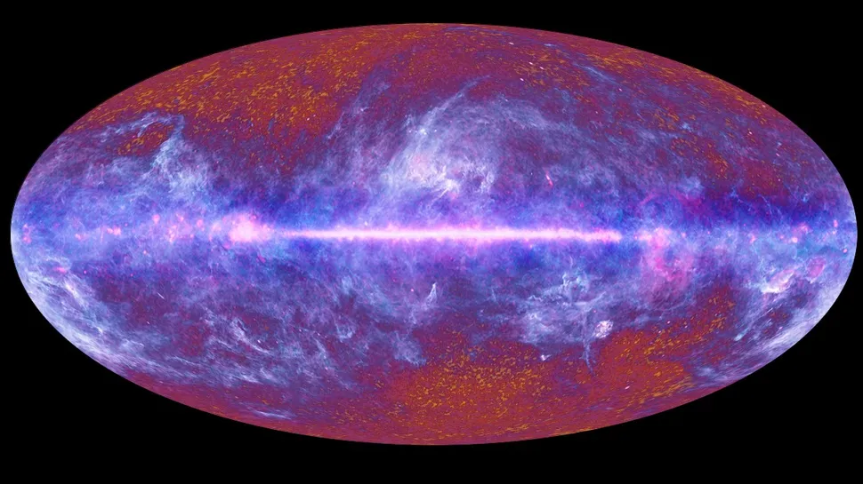
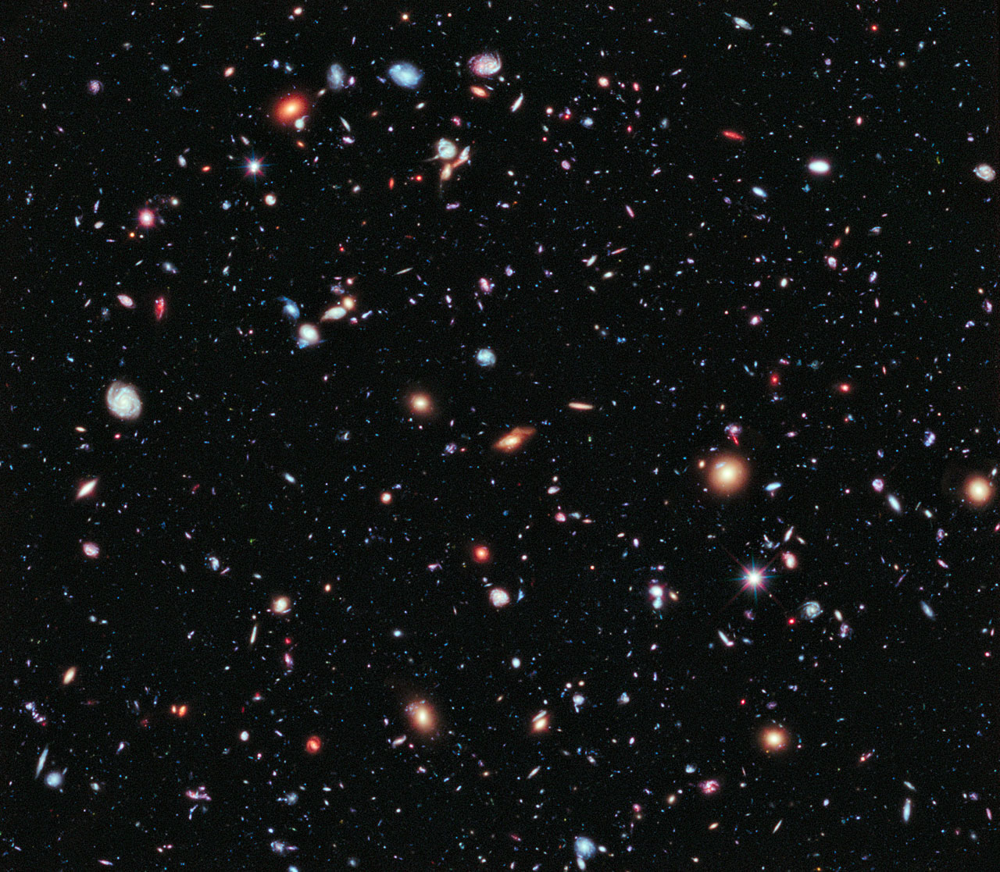
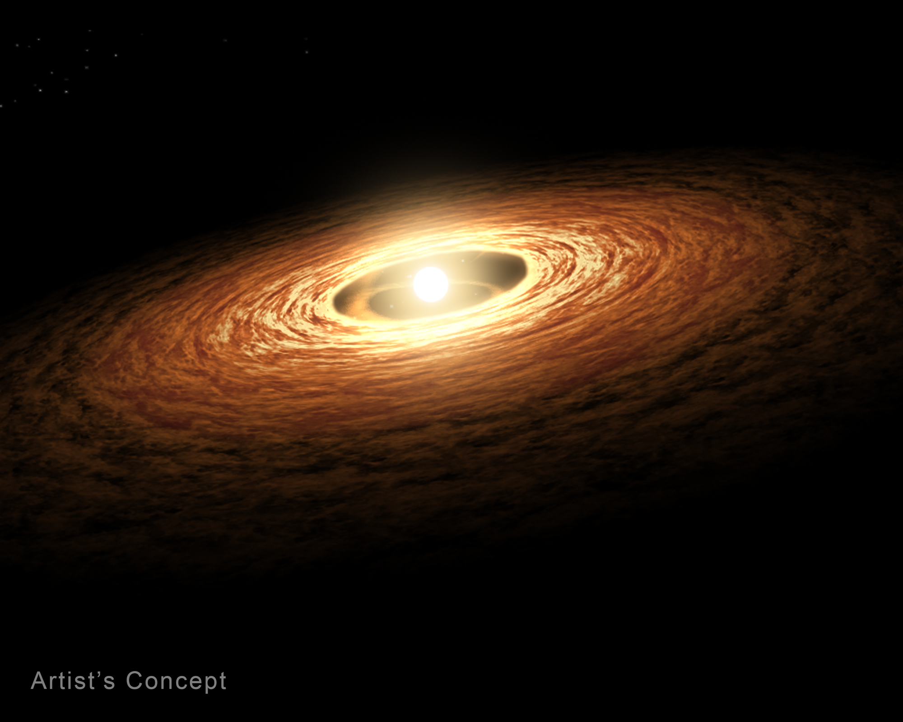
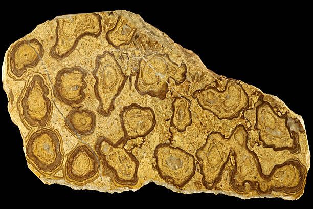

History of the Universe
A brief story from the Big Bang to today.
The Big Bang (~13.8 Billion Years Ago)
The story of our universe begins with the Big Bang. This wasn't an explosion in space, but rather the rapid expansion of space itself from an infinitely hot, dense single point. In the first fractions of a second, the fundamental forces of nature (gravity, electromagnetism, etc.) separated, and the universe was filled with a superheated plasma of elementary particles.
- Inflation: A period of exponential expansion in the first tiny fraction of a second.
- First Atoms: After 380,000 years, the universe cooled enough for electrons to combine with nuclei, forming the first atoms (mostly hydrogen and helium).
- Cosmic Microwave Background (CMB): This event released the "first light" of the universe, which we can still detect today as the CMB.
First Stars & Galaxies (~13.6 Billion Years Ago)
As the universe expanded and cooled, gravity began to pull the vast clouds of hydrogen and helium gas together. Over millions of years, these clouds collapsed to form the first stars and galaxies. These first-generation stars were massive and short-lived. When they died in powerful supernova explosions, they forged heavier elements (carbon, oxygen, iron) and scattered them into space, providing the raw material for future generations of stars and planets.
- The "Cosmic Dark Ages": The period after the CMB but before the first stars ignited.
- Reionization: The light from these first stars "re-ionized" the neutral hydrogen in the universe, making it transparent as it is today.
- Our Galaxy: The Milky Way galaxy began forming during this early period, eventually growing into the spiral galaxy we inhabit.
Formation of the Solar System (~4.6 Billion Years Ago)
Our solar system was born from a giant, spinning cloud of interstellar gas and dust called a solar nebula. At the center, gravity pulled most of the material together to form the Sun. As the Sun ignited, the remaining material flattened into a spinning "protoplanetary disk" around it. Within this disk, dust grains clumped together to form planetesimals, which in turn collided and accreted over millions of years to become the planets, moons, asteroids, and comets we see today.
- Inner Planets: Close to the hot Sun, only rocky materials (like iron and silicate) could survive, forming Mercury, Venus, Earth, and Mars.
- Outer Planets: Beyond the "frost line," it was cold enough for ices (water, methane, ammonia) to exist, allowing the giant planets Jupiter, Saturn, Uranus, and Neptune to grow massive.
Emergence of Life on Earth (~3.5-4 Billion Years Ago)
Not long after its formation, conditions on Earth became suitable for life. The earliest evidence for life dates back to around 3.5 billion years ago, with simple, single-celled organisms like bacteria. For billions of years, these microbes were the *only* life on the planet. A pivotal moment occurred with the evolution of cyanobacteria, which performed photosynthesis and released vast amounts of oxygen into the atmosphere, paving the way for the complex, multicellular life that exists today.
- Great Oxidation Event: The period when oxygen began to build up in the atmosphere, fundamentally changing the planet's chemistry.
- Cambrian Explosion: A relatively rapid period (around 541 million years ago) when most major animal phyla suddenly appeared in the fossil record.
- Today: All life on Earth is descended from those first simple cells.